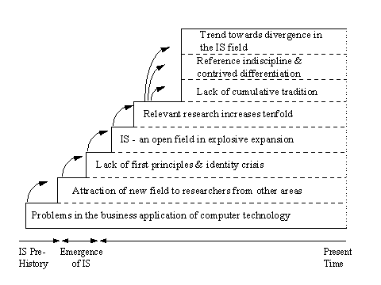

Information Research, Vol. 5 No. 4, July 2000


Information Research, Vol. 5 No. 4, July 2000 | ||||
|
|
|||
This paper provides a detailed assessment of the current status of the Information Systems (IS) field by tracing its historical evolution. It uses lessons drawn from the history of another social science, sociology, to highlight some of the fundamental choices now facing IS researchers. Firstly, the paper identifies the most important tensions and forces that shaped the evolution of the IS field in the 40 or so years of its history. Secondly, it draw a comparison between IS and sociology and uses some selected fundamental patterns of the history of the latter to explain the main aspects of the evolution of IS. Finally, noting that IS researchers do not seem to have succeeded in developing a core of concepts and definitions to enable the accumulation of knowledge in IS and to significantly contribute to the improvement of the business application of information systems, the paper calls for a debate on the future orientations of the field and identifies some of the choices that can be made at this stage of the evolution of the field.
What the future holds for the IS field is not totally clear. On the one hand, it could be argued that IS can become the overarching discipline for the investigation of current organisational and managerial issues. This argument is supported by the prominence of IS research and IS researchers in such critical organisational areas as Electronic Commerce and Electronic Business, the Internet, business process reengineering, competitive advantage, employee empowerment, informating the workplace, the virtual organisation and telemarketing. On the other hand, just as the opportunity presents itself for IS to become a dominant discipline, suitably differentiated from its more mature neighbouring disciplines; for example, computer science, operations research or management science there is, rather ironically, a very real threat to the future status of the field itself. This is evidenced by the fact that many IS/IT programs are being ‘downsized’ at undergraduate and graduate levels. Also, IS departments in universities are facing the threat of hostile colonisation by sister departments from other disciplines (cf. Stein, 1995). Indeed, there is a very real risk that, in the absence of an intellectual core of research questions, protocols and standards in the IS field, other disciplines may capture ‘traditional’ IS teaching and research issues and traditional funding opportunities by imposing the perception that they are better equipped and more efficient in the search for solutions to problems that we regard as IS issues. There are numerous instances of such a phenomenon in the history of science whereby political struggles took place between emerging academic fields of research and more mature areas of knowledge seeking to defend their territories or willing to stretch themselves to include new research topics and capture additional research funding (cf. Borgatta & Cook, 1988; Latour, 1988).
Following Schumpeter’s (1954) argument that among the key characteristics of a "discipline" are a record of its history, we have investigated the historical evolution of the IS field, and have drawn comparisons with another social science: sociology. Thus, this paper traces the emergence of the IS field through the early efforts to apply computer technology to business problems. It then identifies a number of important driving forces or tensions which have shaped the historical evolution of the IS field. These include the lack of an intellectual core of widely-accepted ‘first principles’ in the field which leads to an identity crisis in so far as IS struggles to carve out its own niche in academe and industry; the absence of clear directions for the research agenda of the field, the extreme openness of IS where researchers from a large number of fields attempt to contribute; the vast breadth of the area, where a proliferation of almost 1400 potentially relevant journals further fragments the field; the lack of a cumulative tradition, as researchers ignore previous research or contrive to differentiate their research from that which has gone before; reference indiscipline as researchers abuse or misuse the research results and traditions from the vast range of research areas that are deemed to be relevant; and finally, a trend towards divergence rather than convergence in the core areas of research in IS.
In the next section, this paper locates these forces in the context of the historical evolution of the IS field. Following this, the paper draws some parallels with sociology to demonstrate that many aspects of the evolution of IS are shared with other social sciences, and that they were, in fact, inevitable in the establishment of the field. Finally, the paper presents our assessment of the state of the field in relation to that of sociology and identifies some of the choices that IS researchers must now make in order to strengthen the field and create stable, balanced collaborative alliances with other areas.
In examining the historical evolution of IS, as in any historical analysis, certain choices have to be made in relation to the critical forces, tensions and events that are reported. There are numerous difficulties inherent in synthesising decades of research that took place across ‘schools’, periods, milieus and academic cultures (Szacki, 1982). While acknowledging that this is inevitably a subjective process, we would argue that the following discussion presents some of the significant milestones in this evolution and that, indeed, the latter are causally inter-related (see Figure 1 and its explanation). We would also argue that the establishment of a historical vision of a field is the best way to investigate its nature; and that it can eventually lead to a stronger feeling of group identity amongst IS researchers (cf., Szacki, 1982).
The IS field was ‘born’ between 30 and 40 years ago, due in large measure to the reluctance of researchers in computer science to apply their knowledge to the business area and to address the problems associated with the use of computers in an organisational or business context (cf: Jayaratna, 1994). The engineering emphasis of computer science resulted in a tendency to view the field in primarily technical terms, whereas a wider focus is necessary, both on the application and management of technology, and its wider social implications. The origins of the field can be dated to 1958, when, before the term IS or MIS became popular, Leavitt and Whisler (1958) articulated the central concerns of the emerging field. Subsequently, researchers began to call for the establishment of a field of expertise which would investigate the potential of computing technologies in business (Bonini, 1963). The first textbooks in the area began to appear in the mid 1960s (e.g., Dearden & McFarlan, 1966).
Researchers from a number of disciplines were attracted to the emerging field of IS. The primary contributors have been computer science, management science and organisational science, together with a host of supporting disciplines, including psychology, sociology, statistics, political science, behavioural science, economics, philosophy, mathematics (cf. e.g., Bariff & Ginzberg, 1982; Culnan & Swanson, 1986; Boland & Hirschheim, 1987; Kriebel & Moore, 1982; Nolan & Wetherbe, 1980). Indeed, it has been suggested that the IS field has nothing unique in terms of either topics, theory or methodology, since these have been contributed by researchers from other fields (Keen, 1991). These multiple contributions nevertheless contributed to the quick development and rich variety of the IS field.
Throughout the 40 or so years of its history, the IS field has been characterised by a lack of first principles as a stable and widely-accepted conceptual foundation has not yet been established (Banville & Landry, 1989). This is a consequence of two fundamental factors: firstly, the ‘soft’ nature of the field, as the research topics investigated by IS researchers are often concerned with complex organisational phenomena, very difficult to investigate and to theorise about by their very nature (Roetlisberger, 1977; Le Moigne, 1989) - and secondly, the youth and relative immaturity of the IS field. Such lack of first principles has indeed often been found in emergent areas of research (Scherer, 1992; Siever, 1991). However, IS researchers appear to have been particularly unable to resolve any of the earlier debates they set out to close. Thus, the concept of ‘black box’ as described by Latour (1988) does not seem to apply to IS, to the extent that there are few universally accepted theories and results which researchers may utilise to progress the field.
There is also evidence of an identity crisis in so far as the IS field has not carved out its own niche in academe (nor in industry where it faces the threat of downsizing, outsourcing, end-user control and the speady introduction of Application Service Provider arrangements where organisations no longer run software packages themselves). A summary analysis of the affiliation of authors who contributed to three large, recent IS conferences and to two well-known IS journals shows the large proportion of non-IS researchers publishing in the IS forum in comparison to the situation in the field of economics (see Table 1). Similarly, a recent industrial survey has shown that the portion of IS budgets spent with suppliers outside the organisation is increasing steadily (Datamation, 1996). This reflects the increasing difficulty for organisations to maintain fully operational IS departments, able to undertake all the tasks that have traditionally been part of their remit. The Enterprise Resource Planning (ERP) movement adds more empirical evidence to support this argument as it is an IS phenomenon driven largely by non-IS champions (Adam and O’Doherty, 1999) and relying extensively on external suppliers to replace in-house applications with off-the-shelf software packages (Rowe, 1999; Berger, 1998).
| Author Affiliation |
MIS Quarterly ‘94 |
Information and Management ‘98 | ICIS‘94 |
ECIS’96 |
AMEEA Conf ‘95 |
American Economic Review ‘94 |
|
IS/IT/MIS Computer Science Management Support Fields Economics Other/Non-identified |
17% 15% 17% 15% n/a 36% |
33% 12% 28% 5% 5% 17% |
22% 13% 12% 16% n/a 37% |
31% 25% 4% 14% n/a 26% |
n/a n/a n/a n/a 59% 41%1 |
n/a n/a n/a n/a 60% 40%2 |
As already mentioned, new research territories attract researchers from a wide variety of disciplines. Likewise the fledgling IS field, in drawing certain foundational concepts from other disciplines, created bridges which researchers have crossed to pursue research in the IS field.
Some have argued that the pluralistic and multi-disciplinary nature of the field is one of its major strengths (Cheon et al., 1993; Dickson et al., 1982). Indeed, Stamper (1993) has argued that "this newly emerging scientific discipline could be inhibited by standards imposed prematurely". However, while recognising that the sclerosis of an introspective field talking mainly about itself to itself is clearly inadequate, the pluralistic multi-disciplinary aspect of the field can also be viewed in negative terms, in so far as the buzzing confusion of views has not always helped efforts to achieve progress in the field. Indeed, the symbiotic benefits which could arise from the multi-disciplinary contributions to the IS field have not always brought about long-term dividends (cf. Huber, 1983; Keen, 1991).
IS researchers face an increasingly vast body of knowledge and published research in literally thousands of relevant journals. In their study of citations in IS research journals, Holsapple et al. (1993) found an incredible 1366 potentially relevant journals. This makes the search for references very difficult and virtually forbids contributions to the field in the form of ‘state-of-the-art’ literature reviews that would represent the advancement of specific debates. It also contributes to the ‘mile-wide, inch-deep’ phenomenon, as researchers seek to cover each exposed flank rather than building cumulatively through intensive research on well-defined topics. Another evidence of the breadth of the IS field can be seen in the abundance of messages posted on the ISWORLD listserver (mainly by PhD students) asking for "starting point" references in a wide variety of areas.
The IS field has been characterised by Banville and Landry (1989) as one of "fragmented adhocracy" (cf: also Hirschheim, Klein, & Lytinen, 1996). There are some islands of cohesive thought, but no overarching conceptual roof. At a very fundamental level, the failure to abstract foundational theories and concepts from the contributing disciplines means that the IS field lacks a unifying paradigm for the orderly and cumulative acquisition of knowledge. The importance of such a cumulative tradition has been emphasised, notably by Keen (1980), as being a critical requirement for the field. However, the absence of such a cumulative tradition has resulted in problems. Teng and Galletta (1991), in their survey of IS researchers' perceptions of the field, report that the majority of respondents were of the opinion that IS research has failed to build a cumulative research tradition. This was corroborated by the finding that IS researchers virtually never rely on existing frameworks developed by other researchers. This is a matter of worry for IS research, given Naumann's (1986) persuasive argument that, in new fields of research struggling to develop theory, "pre-theory frameworks" must be used to guide research activities. As noted by Teng and Galletta (1991), this might be an indication of a need for "greater reliance on current frameworks or for new contributions in this area".
Thus, research is conducted which ignores of fails to build on relevant prior research and with little reconciliation of research results. There are many examples of studies which have investigated the same research topic, but whose findings are completely at variance with each other (cf. Jarvenpaa et al., 1985; Hiltz and Johnson, 1990). Hiltz and Johnson (1990), in their study of user-satisfaction levels with information systems, reviewed the findings of twelve previous studies which sought to identify reliable variables that could predict user acceptance of information systems. They found widespread divergence of findings for almost all the variables studied, even where the variables investigated were as clear-cut or trivial as ‘age of user’ or ‘speed of typing’. Thus, researchers attempting to bring together all the research findings relevant to their research end up with an over-abundance of mutually-exclusive findings and points of view. What appears to be a sign of the richness of the field becomes a source of difficulty when researchers attempt to contribute to IS practice and to the answer specific questions raised by managers.
There also is anecdotal evidence that researchers confronted with too many different sources of information and too many conflicting research findings are pushed towards careless referencing and opportunistic, discriminatory reporting. We have coined the term ‘reference indiscipline’ to describe this phenomenon whereby researchers strive and sometimes fail to comprehend the research results and traditions from the vast range of research areas that are seen as related and misuse these as a result. Similarly, findings from other fields are frequently brought into IS without the accompanying context in which they were obtained. However, the absence of this context results in arguments and findings which may actually be untenable and inappropriate. Also, there are many instances of IS researchers choosing to ignore or contriving to differentiate their research from that which has gone before. Kraemer and Dutton (1991) cite several examples where researchers chose to ignore earlier work in their topic of study, or even coined new terms to differentiate their work from previous related research.
There is growing evidence that IS researchers are concerned that the IS field was going in the wrong direction (cf. Teng and Galletta’s 1991 survey), i.e. towards divergence rather than convergence, as most of the research being conducted in the field opens new debates and existing issues are not progressed significantly. Little current research has contribued to any of the problems which are faced on a daily basis by managers in organisations. This trend towards divergence rather than convergence in the IS field has also been reported in two separate studies (Cheon et al., 1993; Culnan and Swanson, 1986) which involved a comprehensive analysis of the IS literature.
Figure 1 presents a complex perspective on the evolution of IS that requires some explanation. It is important to note that, in the history of IS, the most significant driving forces that shaped the evolution of the field did not emerge independently from each other. The developments described above appear to be causally inter-related as each of them contributes to the emergence of another. Thus, they can be viewed in terms of chronological phases in the history of IS as it has evolved: the introduction of computing technology in organisations revealed a huge potential and an equally large range of problems, thus attracting researchers from a variety of other more established disciplines. The problems identified were addressed from multiple perspectives by researchers from many different fields, no bad thing per se, obviously. However, this diversity created a large number of divergent steams of research into essentially the same phenomena which has inhibited the establishment of first principles in the field. In turn, this opening of the field to other disciplines led to a situation where IS researchers were no longer in control of the IS agenda, which became increasingly determined by progress in numerous other areas rather than by the findings of IS research. Also, the vast amount of research in these related disciplines has created a huge intellectual investment dilemma for IS researchers who have to browse, filter and attempt to comprehend the vast range of research traditions and findings from all these areas – e.g. it is impossible to understand the E-Commerce phenomenon without robust knowledge about technology on the one hand, and international trade on the other hand. The breadth of the IS area thus leads directly to problems in establishing a cumulative tradition. This diversity also creates a large number of divergent streams of research which complicates the accumulation of knowledge in IS.
This staged evolution of the IS field is pictorially represented in Figure 1, where the critical developments in the history of IS and their causal inter-relatedness are shown. Also, the figure illustrates that all these problems remain extant, that is, the field does not appear to have resolved any of the problems caused by the different aspects of its evolution. Figure 1, therefore, provides a framework for future projections of the IS field that researchers can use to show what problems the solutions they put forward are addressing.

Figure 1: Forces and Tensions Shaping the Historical Evolution of the IS Field.
IS researchers would be ill-advised to think that the IS field is unique and that its destiny is radically different from that of other similar areas in social sciences. Indeed, the IS field is not alone in having an eclectic and pluralistic foundation. It is quite natural in many emergent fields that early researchers have been trained in other areas and bring with them a foundation of usable knowledge and concepts from more mature disciplines – the emergence of psychology from psychophysical philosophy being a well-documented example of a discipline which emerged and compartmentalised in a stable fashion, albeit after about one hundred years (cf. e.g. Bunge & Ardila, 1987; Hearnshaw, 1987). Having a wide breadth of contributing disciplines can bestow advantages in a field in so far as research can be illuminated in many ways with many differing conceptual schemes. For example, Gould (1986) describes how Darwin's confidence in his theory of evolution was influenced by his reading of Adam Smith's The Wealth of Nations, as the principle of natural selection has parallels in the principles of the competitive market economy.
The identification of the main driving forces in the history of IS and the main problems faced by IS researchers constitutes a useful first step in attempting to progress the debate concerning the nature and future of the IS field. But, in order to fully appreciate the significance of the historical evolution which is highlighted in Figure 1, it is not sufficient to look exclusively at the IS field itself. More can be learned when the evolution of a newer field is compared to that of older, more established areas whose evolution is relevant to IS and with whom parallels can be drawn. Indeed, such comparison can highlight the inevitability of certain phases in the evolution of a field of research, and, more importantly, can provide some clues as to what the future of a field is likely to be, given the circumstances that prevail.
In the following sub-sections, the parallels and lessons that can be drawn from the field of sociology are considered in terms of their consequences for IS.
The evolution of sociology which was founded by Durkheim (among others) some 120 years ago provides a useful comparison for the evolutionary dynamic of IS as described in Figure 1. Indeed, many of the conclusions drawn from studies of the history of sociology can be usefully applied to the IS field also. As stated by Collins (1994), sociology, the general science of social phenomena, "has the most diverse roots of all" (p.38). He argues that it is derived from the disciplines of history, philosophy, economics, public administration, social reform, psychology and from anthropology, but that it actually drew its specificity (i.e., distinguished itself from these other areas) from a concern for generalisations about society itself. Sociologists managed to be different because they attempted to reform society on social grounds and to introduce a new political ideology. However, specific conditions had to emerge before sociology could establish itself as an academic field because the liberal socialist agenda that sociologists put forward was, initially at least, perceived as too controversial for scientific research and teaching (Collins, 1994; Shaskolsky, 1970).
Thus, for all fields, the conditions have to be right in order for a field to establish itself in society. In the case of sociology, the new liberal socialist agenda had to become an acceptable alternative, while for IS, managers had to be convinced that the application of computing technology to business areas had the potential to create such competitive advantage that they should be concerned about missing out on these benefits (Earl, 1989). Collins (1994) has documented the establishment of sociology in detail. He described the favourable climate in late nineteenth century France where the newly established third republic was attempting to reform its educational system based on the public school system rather than religious institutions. A protégé of the Minister of Education, Durkheim was assigned a strong position of Professor of Pedagogy and, as Collins describes it, "by adroit administrative manoeuvring as well as intellectual brilliance, Durkheim was able to develop his chair of Pedagogy into a professorship in sociology, the first on the continent" (Collins, 1994, p. 45).
Once this first step was accomplished, sociology was established as a valid area of research, but sociologists still faced the task of intellectually asserting their field in the academic arena and in the eyes of the public. Durkheim accomplished this by drawing on results and methods used in neighbouring fields. He combined his knowledge of philosophy with new empirical materials collected by both early researchers of social phenomena and anthropologists, and started to build general theories which acted as the first principles of the new field (it is worth noting that most of these first principles still apply).
However, the first steps in the evolution of sociology failed to build rigorously upon these first principles. Sorokin (1928) criticised the state of knowledge in the early days of sociology. He noted that the field of sociology was characterised by:
...a multitude of various and contradictory systems. Every novice entering the field is likely to be lost in it and (...) to have the greatest difficulty in discriminating between what in all these theories is valid and what is false. Therefore, one of the most urgent tasks of the contemporary sociologist is to separate what is really valid from that which is false or unproven in these theories (p. xvi)
This difficulty in separating the valid theories from the insignificant results produced by researchers is obviously a characteristic shared by most social science fields at some point or another in their history. Thus, it is not surprising to note that early sociologists have experienced the same problems as IS researchers currently face. We would argue that the conclusions reached in 1928 by Sorokin regarding sociology also apply to IS today.
It is very interesting to note that the solid foundation of sociology did not prevent it losing some ground later in its evolution. Borgatta and Cook (1988) note with regret that sociology has lost all claim to some research areas that have been usurped by other disciplines and professions. Ironically, they single out the area of system analysis and design as one where sociologists could have been involved "in a major way" (p.15). The recollection of this IS success provides a useful counter-balance to some of the arguments presented in this paper. Deeper analysis would tend to indicate that sociology lost claim to topics of research when they involved a technical content too radically different from that of traditional sociology or when they were too distant from the original goals of sociology, as founded by its intellectual fathers.
Despite these problems and despite the open nature of the field of sociology, it is important to note that the phenomenon whereby researchers from a variety of disciplines can write under the IS banner does not occur in sociology. In a survey of the research that goes on in sociology, Makler et al. (1982) found that 80% of the participants to the Ninth World Congress of Sociology were affiliated as sociologists, a figure which can be contrasted with the statistics for the IS field in Table 1 above.
This brief consideration of the history of sociology provides a number of lessons which can be applied to the IS field in its current state of evolution. These lessons are analysed in the following sections.
First, it is essential to pay a great deal of attention to the context and specific societal circumstances in which new ideas, new concepts and new fields emerged. As Collins and Makowsky (1971) note:
Since idea systems do not spring magically into existence, it is important to understand the circumstances that conditioned the emergence of social theories that have profoundly affected the ways in which we view our world (p. vii)
In terms of IS, it is important to understand the reasons behind the emergence of an area of research aimed at developing efficient methods and concepts to enable the successful application of IS to organisations. This has been studied in some detail by previous researchers (e.g.: Earl, 1989; Bantleman and Jones, 1984), but more attention may need to be paid to the reasons why a wider audience of individuals, institutions and organisations have come to regard IS issues as crucial over the last 40 years. We feel that it is essential to achieve an understanding of the society-wide phenomenon whereby IT issues have come to the fore so that IS researchers get some sense of what may be judged to constitute success or failure for the IS field and for IS research. This is especially important given the gaps noted by many authors between the practice of IS in the real world and the (embryonic) IS theory (e.g.: Keen, 1980; Friedman, 1989; Chang, 1990; Westrup, 1993). Thus, re-establishing the roles and the relevance of IS as a field of scientific investigation appears particularly crucial at this stage of the evolution of the field (c.f., Nissen et al., 1991), especially in view of a number of recent global developments of strictly IS origin that threaten to change to the world: the Internet, Electronic Commerce and Business, etc.
Secondly, it is quite natural in the early days of a new field of research that researchers spend significant time and effort in political struggles in order to reach a position of dominance from which they can plead the usefulness of their point of view. Thus, the agenda for research at these early stages is marked more by the necessity to convince the public and the authorities that the field has potential (and thus deserves significant funding), than by efforts to build intellectually sound first principles. Indeed, political and pragmatic opportunism have been characteristic of the emergence of many fields, thus illustrating that any rational, positivist agenda, however worthy its ideals and strategy may be, is not likely to map the emergence of the field, given the highly political nature of the issues at stake. The history of science indicates that it is quite common that researchers get involved in much political manoeuvring while their emerging fields are not suitably differentiated (Collins, 1994; Borgatta & Cook, 1988). This inevitably leads to a ‘goal displacement’ phenomenon whereby scholarly output becomes the goal in efforts to compete with colleagues, and less emphasis is paid to the impact and usefulness of the output (Collins and Makowsky, 1971).
Thirdly, once researchers have reached positions from which they can speak on behalf of the new field, they will have to spend even more intellectual energy differentiating the new field from neighbouring fields. However, this strategy is not tenable in the long term in an applied field such as IS, where research must inform practice. Thus, such a stage in the history of a field must only be regarded as a transition stage and, once a field is established, researchers should not be diverted from the crucial task of accumulating knowledge in their field and, naturally, from contributing pragmatically to the improvement of the business application of IT. Forty or so years into its evolution the theoretical foundation of sociology had yet to be established (Sorokin, 1928). It is therefore tempting to conclude that IS is at that same stage at the start of the new millenium.
These conclusions can serve to explain a number of the driving forces that were highlighted earlier in this paper. In particular, the need to differentiate current research from previous research of a similar nature is justified by the need to differentiate IS research from that taking place in other fields, as is the abundance of papers published on the same topic. In this way, IS researchers seek to create a ‘critical mass’ effect which gives the illusion of an enormous and dynamic field. Thus, some have considered that large arrays of papers attempting to shed different light on the phenomena under research may enrich the field and broaden its political foundations (Dickson et al., 1982). Similarly, as researchers are involved in much political manoeuvring and struggle to obtain the funding required for long-term research projects, there is little time left to establish the ‘basic science’ of IS. Also, because the field is so young, the range of issues being considered by IS researchers is on the increase on a permanent basis which gives the impression of instability and divergence, which may be more uncomfortable than really dangerous for the field.
However, it can equally be argued that IS has reached the stage of being suitably established, politically stable and wide ranging in terms of the topics it encompasses, so that IS researchers should proceed to the next stage and work for the long term intellectual establishment of their field. It seems that this would require a major re-think of some of the practices of research in the IS field. For instance, there has been a certain emphasis on ethical issues in the IS literature recently (e.g., CACM special issue, 1995) and Nissen (1996) has invited individual researchers to take "responsible action" in striving to resolve the problematic developments identified in the field.
Thus, in the case of IS, the parallels with other social sciences suggest that the developments that have arisen have been inevitable at certain stages of the evolution of IS. But we would argue that some of the problems that have characterised the IS field throughout its history, while clearly predictable in the early days of IS, are no longer appropriate for the long term future of the field. In sociology, in the area of social network analysis, Nohria (1992) has made similar comments. He observed that this very dynamic area of research was becoming a victim of its own success. Citing Barnes (1972), he re-iterated a warning aimed at researchers of social network analysis:
Anyone reading through what purports to be network literature will readily perceive the analogy between it and a terminological jungle in which any newcomer may plant a tree. This indiscriminate proliferation of the network concept threatens to relegate it to the status of an evocative metaphor, applied so loosely that it may mean anything (p.3, italics added)
Nohria (1992) concluded that, were this to happen, much of the knowledge that can be learned by studying organisations from a network perspective may be lost.
Applying this stark prediction to the IS field, IS researchers may be well advised to consider that the time has come to assess the research carried out to date and attempt to filter out the essential from the insignificant. This may lead to the creation of a number of strong research ‘clusters’ within which research can be conducted with renewed efficiency. Some attempts have been made, for example, by Davis (1992), to provide such a vision of the IS field. This, in our view, is certainly a worthwhile topic of research for the future of the IS field, if it avoids the trap of over-specialisation which has prevented the high level generalisation of research findings in other fields (Szacki, 1982).
Some will no doubt argue that the arguments in this paper appear to represent a call for a narrow introspective field, closed to outside contributions. However, this is not the case; indeed, the paper has acknowledged the obvious strengths of the pluralistic and multi-disciplinary nature of the field. Gould (1989), in his well-known ‘Wonderful Life’, provides a useful analogy to this debate. He reports the common mistake found even in textbooks which consists in citing the most unsuccessful lineages as exemplars of evolution. In his own words:
We do this because we try to extract a single line of advance from the true topology of copious branching. In this misguided effort, we are inevitably drawn to bushes so near the point of total annihilation that they retain only one surviving twig. We then view this twig as the acme of upward achievement, rather than the last gasp of a richer ancestry (p. 35).
In relation to the arguments of this paper, it could therefore be argued that the authors are ‘misguided’ when they claim that the divergence of IS is not sustainable in the long term and call for more efforts aimed at assessing the progress of IS research in order to sort out the essential and the insignificant, i.e. cut out some of the twigs. Nevertheless, we and other researchers we have referenced in this paper, maintain that there exist some real problems in the field that will potentially reduce its importance in the very unstable and political arena of social sciences. Failure to address these problems may result in IS researchers losing some of their research territory to other fields and failing to secure the funding which is required for serious research.
Thus, to conclude, the first step in solving a problem (the easiest, perhaps) is to acknowledge the existence and nature of the problem. This paper has outlined the nature of the problem. However, mere acknowledgement of the problem is not enough. The next step, therefore, is to determine some desirable future orientations for the IS field and how to achieve these. Many researchers have seen the solution in terms of deriving a specific paradigm for IS (Farhoomand, 1987; Van Gigch & Pipino, 1986; Weber, 1987). However, Banville and Landry (1989) present a number of powerful arguments which question whether such a paradigm is feasible, or, indeed, desirable. We argue that the overall solution for the future of the IS field involves more than the existence of a specific paradigm. Based on the historical analysis of the field and the lessons that may be drawn from other fields, it seems that some of the problems which have emerged during the evolution of the IS field were inevitable and even necessary for the establishment of the field. These problems should not worry IS researchers unduly as they can be corrected. The point is to determine how far the IS field has gone in comparison with other fields in the social sciences and whether it has reached the stage of its history when the nature of research in IS can shift orientation towards more attention to the long term establishment of an intellectual core and stronger identity.
How to cite this paper:
Adam, Frederic & Fitzgerald, Brian (2000) "The status of the IS field: historical perspective and practical orientation." Information Research, 5(4) Available at: http://informationr.net/ir/5-4/paper81.html
© the authors, 2000. Last updated: 12th June 2000<
Contents |
|
Home |